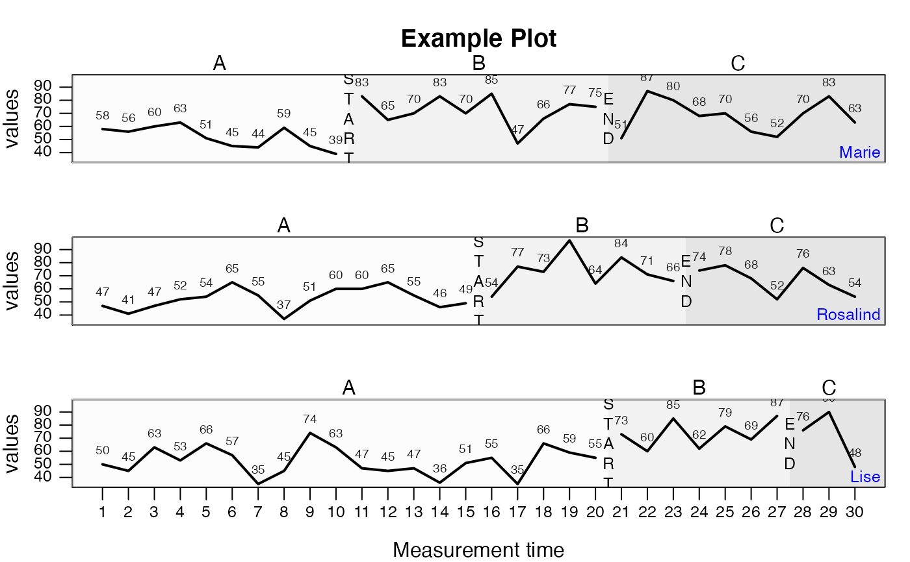

The style_plot function is used to create graphical styles for a single-case plot
Arguments
- style
A character string or a vector of character strings with predefined styles.
- ...
Further arguments passed to the plot command.
Value
Returns a list to be provided for the style argument of the plot.scdf function.
fillIf set, the area under the line is filled with the given color (e.g.,fill = "tomato"). Use the standard R command colors() to get a list of all possible colours.fillis empty by default.annotationsA list of parameters defining annotations to each data point. This adds the score of each MT to your plot."pos"Position of the annotations: 1 = below, 2 = left, 3 = above, 4 = right."col"Color of the annotations."cex"Size of the annotations."round"Rounds the values to the specified decimal.
annotations = list(pos = 3, col = "brown", round = 1)adds scores rounded to one decimal above the data point in brown color to the plot."names"A list of parameters defining the depiction of phase names (e.g.names = list(cex = 0.8, col = "red", side = 1): cex for size, col for color, and side for position). Seemtextfor more details."lwd"Width of the plot line. Default islwd = 2."pch"Point type. Default ispch = 17(triangles). Other options are for example: 16 (filled circles) or "A" (uses the letter A)."main"Main title of the plot."mai"Sets the margins of the plot."bty"Shape of the frame surrounding the inner plot"fill.bg"Background color of the plot. If a vector is provided, these colors will be assigned to phases (each phase name becomes a color)."grid"Color of a grid."text.ABlag"Text displayed between phases."cex.axis"Size of the axis annotations"las"Orientation of the axis annotations"col.lines"Color of the lines"col.dots"Color of the dots"col.seperator"Color of the phase seperating lines"col.bg"Color of the outer plot"col"General color setting for the plot"col.text"Color of all labels of the plot.
Details
style_plot("") will return a list of predefined styles.
Predefined styles can be combined style_plot(style = c("grid2", "tiny"))
where settings of a latter style overwrite settings of the former.
Additional style paramters are set following the style argument and can be combined with those:
style_plot(style = "grid2", fill = "grey50", pch = 18).
Examples
newstyle <- style_plot(style = "default")
newstyle$text.ABlag <- c("START","END")
newstyle$col.dots <- ""
newstyle$annotations <- list(cex = 0.6, col = "grey10", offset = 0.4)
newstyle$names <- list(cex = 0.8, col = "blue", side = 1, adj = 1, line = -1, at = 31)
newstyle$fill.bg <- c("grey99", "grey95", "grey90")
plot(exampleABC, style = newstyle, main = "Example Plot")
